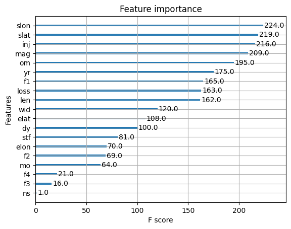

XGBoost Model Classification#
import numpy as np
import pandas as pd
import matplotlib.pyplot as plt
import seaborn as sns
import warnings
warnings.filterwarnings('ignore')
import plotly.express as px
import plotly.graph_objects as go
from sklearn.model_selection import train_test_split
from sklearn.linear_model import LinearRegression
from sklearn.metrics import mean_squared_error, r2_score
import os
for dirname, _, filenames in os.walk('/kaggle/input'):
for filename in filenames:
print(os.path.join(dirname, filename))
ruta = r'C:\Users\jthow\iCloudDrive\Documents\3_Maestria_Estadistica_UNINORTE\3_Tercer_Semestre\Machine_Learning\tornados.csv.zip'
df = pd.read_csv(ruta)
df['loss'] = df['loss'].replace(0, pd.NA)
df['loss'] = df['loss'].interpolate(method='linear')
df['mag'] = df['mag'].fillna(df['mag'].mean())
df.isnull().sum()
om 0
yr 0
mo 0
dy 0
date 0
time 0
tz 0
datetime_utc 0
st 0
stf 0
mag 0
inj 0
fat 0
loss 0
slat 0
slon 0
elat 0
elon 0
len 0
wid 0
ns 0
sn 0
f1 0
f2 0
f3 0
f4 0
fc 0
dtype: int64
pip install xgboost
Requirement already satisfied: xgboost in c:\users\jthow\miniconda3\envs\ml_venv\lib\site-packages (2.1.4)Note: you may need to restart the kernel to use updated packages.
[notice] A new release of pip is available: 25.0.1 -> 25.1
[notice] To update, run: python.exe -m pip install --upgrade pip
Requirement already satisfied: numpy in c:\users\jthow\miniconda3\envs\ml_venv\lib\site-packages (from xgboost) (1.26.0)
Requirement already satisfied: scipy in c:\users\jthow\miniconda3\envs\ml_venv\lib\site-packages (from xgboost) (1.10.1)
import xgboost as xgb
from sklearn.model_selection import train_test_split
import numpy as np
# Crear la columna 'mortality' en el DataFrame original
df['mortality'] = df['fat'].apply(lambda x: 0 if x == 0 else 1)
# Renombrar el DataFrame a 'mortality_target'
mortality_target = df
import numpy as np
# Crear la columna 'mortality' con 0 si 'fat' es 0, y 1 si 'fat' es mayor que 0
df['mortality'] = np.where(df['fat'] == 0, 0, 1)
# Asignar el DataFrame modificado a 'tornados.target'
tornados_target = df
X = tornados_target[['om', 'yr', 'mo', 'dy', 'stf', 'mag', 'inj', 'loss', 'slat', 'slon', 'elat', 'elon', 'len', 'wid', 'ns', 'sn', 'f1', 'f2', 'f3', 'f4']]
y = df['mortality']
# Asumiendo que ya tienes X y y preparados como en tu código anterior
X_train, X_test, y_train, y_test = train_test_split(X, y, stratify=y, random_state=42)
# Crear el modelo XGBoost
xgboost_model = xgb.XGBClassifier(random_state=0)
# Ajustar el modelo con los datos de entrenamiento
xgboost_model.fit(X_train, y_train)
# Evaluar la precisión en el conjunto de entrenamiento y prueba
print("Accuracy on training set: {:.3f}".format(xgboost_model.score(X_train, y_train)))
print("Accuracy on test set: {:.3f}".format(xgboost_model.score(X_test, y_test)))
Accuracy on training set: 0.996
Accuracy on test set: 0.982
import xgboost as xgb
from sklearn.model_selection import train_test_split
from sklearn.metrics import accuracy_score
import matplotlib.pyplot as plt
# Dividir los datos en conjunto de entrenamiento y prueba (asegurando que X y y ya están definidos)
X_train, X_test, y_train, y_test = train_test_split(X, y, stratify=y, random_state=42)
# Parámetros a comparar
params = [
{'learning_rate': 0.1, 'n_estimators': 100, 'random_state': 0},
{'learning_rate': 0.05, 'n_estimators': 100, 'random_state': 0},
{'max_depth': 5, 'n_estimators': 100, 'random_state': 0},
{'subsample': 0.8, 'n_estimators': 100, 'random_state': 0},
{'colsample_bytree': 0.8, 'n_estimators': 100, 'random_state': 0}
]
# Lista para almacenar resultados
results = []
# Probar cada conjunto de parámetros
for param in params:
xgboost_model = xgb.XGBClassifier(**param)
xgboost_model.fit(X_train, y_train)
y_pred = xgboost_model.predict(X_test)
accuracy = accuracy_score(y_test, y_pred)
results.append((param, accuracy))
# Mostrar los resultados
for param, accuracy in results:
print(f"Parameters: {param} -> Accuracy: {accuracy:.4f}")
Parameters: {'learning_rate': 0.1, 'n_estimators': 100, 'random_state': 0} -> Accuracy: 0.9819
Parameters: {'learning_rate': 0.05, 'n_estimators': 100, 'random_state': 0} -> Accuracy: 0.9824
Parameters: {'max_depth': 5, 'n_estimators': 100, 'random_state': 0} -> Accuracy: 0.9818
Parameters: {'subsample': 0.8, 'n_estimators': 100, 'random_state': 0} -> Accuracy: 0.9806
Parameters: {'colsample_bytree': 0.8, 'n_estimators': 100, 'random_state': 0} -> Accuracy: 0.9813
pip install --upgrade xgboost
Requirement already satisfied: xgboost in c:\users\jthow\miniconda3\envs\ml_venv\lib\site-packages (2.1.4)
Requirement already satisfied: numpy in c:\users\jthow\miniconda3\envs\ml_venv\lib\site-packages (from xgboost) (1.26.0)
Requirement already satisfied: scipy in c:\users\jthow\miniconda3\envs\ml_venv\lib\site-packages (from xgboost) (1.10.1)
Note: you may need to restart the kernel to use updated packages.
[notice] A new release of pip is available: 25.0.1 -> 25.1
[notice] To update, run: python.exe -m pip install --upgrade pip
pip install --upgrade scikit-learn
Requirement already satisfied: scikit-learn in c:\users\jthow\miniconda3\envs\ml_venv\lib\site-packages (1.6.1)
Requirement already satisfied: numpy>=1.19.5 in c:\users\jthow\miniconda3\envs\ml_venv\lib\site-packages (from scikit-learn) (1.26.0)
Requirement already satisfied: scipy>=1.6.0 in c:\users\jthow\miniconda3\envs\ml_venv\lib\site-packages (from scikit-learn) (1.10.1)
Requirement already satisfied: joblib>=1.2.0 in c:\users\jthow\miniconda3\envs\ml_venv\lib\site-packages (from scikit-learn) (1.3.2)
Requirement already satisfied: threadpoolctl>=3.1.0 in c:\users\jthow\miniconda3\envs\ml_venv\lib\site-packages (from scikit-learn) (3.2.0)
Note: you may need to restart the kernel to use updated packages.
[notice] A new release of pip is available: 25.0.1 -> 25.1
[notice] To update, run: python.exe -m pip install --upgrade pip
# Definir el modelo XGBoost sin GridSearchCV
xgboost_model = xgb.XGBClassifier(n_estimators=100, learning_rate=0.1, max_depth=5, random_state=0)
# Ajustar el modelo con los datos de entrenamiento
xgboost_model.fit(X_train, y_train)
# Evaluar la precisión en el conjunto de entrenamiento y prueba
print("Accuracy on training set: {:.3f}".format(xgboost_model.score(X_train, y_train)))
print("Accuracy on test set: {:.3f}".format(xgboost_model.score(X_test, y_test)))
Accuracy on training set: 0.987
Accuracy on test set: 0.982
import matplotlib.pyplot as plt
from xgboost import plot_importance
# Visualizar la importancia de las características
plot_importance(xgboost_model)
plt.show()

# Predicciones en el conjunto de test
y_pred = xgboost_model.predict(X_test)
# Calcular la precisión (accuracy)
from sklearn.metrics import accuracy_score
print("Accuracy on test set: {:.3f}".format(accuracy_score(y_test, y_pred)))
Accuracy on test set: 0.982
params = {
'objective': 'binary:logistic',
'max_depth': 5,
'learning_rate': 0.05,
'n_estimators': 100
}
# Realizar validación cruzada
cv_results = xgb.cv(params=params, dtrain=xgb.DMatrix(X_train, label=y_train),
num_boost_round=100, early_stopping_rounds=10, nfold=3, verbose_eval=True)
# Ver resultados de la validación cruzada
print(cv_results)
[0] train-logloss:0.17340+0.00044 test-logloss:0.17365+0.00063
[1] train-logloss:0.16568+0.00043 test-logloss:0.16615+0.00060
[2] train-logloss:0.15862+0.00042 test-logloss:0.15935+0.00060
[3] train-logloss:0.15211+0.00041 test-logloss:0.15306+0.00060
[4] train-logloss:0.14606+0.00040 test-logloss:0.14727+0.00063
[5] train-logloss:0.14043+0.00038 test-logloss:0.14182+0.00063
[6] train-logloss:0.13514+0.00038 test-logloss:0.13675+0.00065
[7] train-logloss:0.13016+0.00037 test-logloss:0.13197+0.00064
[8] train-logloss:0.12550+0.00036 test-logloss:0.12749+0.00065
[9] train-logloss:0.12114+0.00036 test-logloss:0.12329+0.00065
[10] train-logloss:0.11704+0.00034 test-logloss:0.11934+0.00067
[11] train-logloss:0.11317+0.00036 test-logloss:0.11564+0.00068
[12] train-logloss:0.10951+0.00034 test-logloss:0.11216+0.00067
[13] train-logloss:0.10606+0.00035 test-logloss:0.10889+0.00066
[14] train-logloss:0.10283+0.00036 test-logloss:0.10580+0.00065
[15] train-logloss:0.09977+0.00037 test-logloss:0.10288+0.00066
[16] train-logloss:0.09689+0.00038 test-logloss:0.10015+0.00068
[17] train-logloss:0.09416+0.00039 test-logloss:0.09756+0.00067
[18] train-logloss:0.09158+0.00040 test-logloss:0.09513+0.00068
[19] train-logloss:0.08913+0.00039 test-logloss:0.09282+0.00071
[20] train-logloss:0.08683+0.00039 test-logloss:0.09064+0.00073
[21] train-logloss:0.08465+0.00039 test-logloss:0.08858+0.00075
[22] train-logloss:0.08260+0.00037 test-logloss:0.08666+0.00075
[23] train-logloss:0.08065+0.00038 test-logloss:0.08485+0.00076
[24] train-logloss:0.07880+0.00038 test-logloss:0.08312+0.00077
[25] train-logloss:0.07706+0.00039 test-logloss:0.08149+0.00079
[26] train-logloss:0.07541+0.00038 test-logloss:0.07994+0.00081
[27] train-logloss:0.07385+0.00039 test-logloss:0.07848+0.00081
[28] train-logloss:0.07235+0.00038 test-logloss:0.07711+0.00082
[29] train-logloss:0.07093+0.00039 test-logloss:0.07578+0.00082
[30] train-logloss:0.06958+0.00039 test-logloss:0.07455+0.00081
[31] train-logloss:0.06829+0.00040 test-logloss:0.07340+0.00081
[32] train-logloss:0.06708+0.00042 test-logloss:0.07230+0.00081
[33] train-logloss:0.06594+0.00043 test-logloss:0.07125+0.00081
[34] train-logloss:0.06485+0.00043 test-logloss:0.07029+0.00082
[35] train-logloss:0.06382+0.00043 test-logloss:0.06936+0.00082
[36] train-logloss:0.06284+0.00043 test-logloss:0.06849+0.00082
[37] train-logloss:0.06191+0.00044 test-logloss:0.06766+0.00083
[38] train-logloss:0.06102+0.00044 test-logloss:0.06688+0.00083
[39] train-logloss:0.06018+0.00046 test-logloss:0.06614+0.00082
[40] train-logloss:0.05938+0.00048 test-logloss:0.06545+0.00084
[41] train-logloss:0.05861+0.00047 test-logloss:0.06478+0.00084
[42] train-logloss:0.05789+0.00048 test-logloss:0.06415+0.00085
[43] train-logloss:0.05719+0.00049 test-logloss:0.06357+0.00086
[44] train-logloss:0.05653+0.00049 test-logloss:0.06302+0.00087
[45] train-logloss:0.05591+0.00048 test-logloss:0.06249+0.00087
[46] train-logloss:0.05530+0.00049 test-logloss:0.06200+0.00089
[47] train-logloss:0.05474+0.00050 test-logloss:0.06154+0.00090
[48] train-logloss:0.05420+0.00050 test-logloss:0.06110+0.00091
[49] train-logloss:0.05369+0.00051 test-logloss:0.06067+0.00090
[50] train-logloss:0.05321+0.00050 test-logloss:0.06027+0.00091
[51] train-logloss:0.05274+0.00050 test-logloss:0.05990+0.00092
[52] train-logloss:0.05231+0.00051 test-logloss:0.05955+0.00091
[53] train-logloss:0.05189+0.00049 test-logloss:0.05923+0.00092
[54] train-logloss:0.05150+0.00049 test-logloss:0.05892+0.00092
[55] train-logloss:0.05112+0.00049 test-logloss:0.05863+0.00092
[56] train-logloss:0.05074+0.00047 test-logloss:0.05836+0.00094
[57] train-logloss:0.05038+0.00047 test-logloss:0.05809+0.00093
[58] train-logloss:0.05002+0.00046 test-logloss:0.05782+0.00096
[59] train-logloss:0.04969+0.00045 test-logloss:0.05758+0.00096
[60] train-logloss:0.04936+0.00045 test-logloss:0.05736+0.00096
[61] train-logloss:0.04905+0.00044 test-logloss:0.05714+0.00096
[62] train-logloss:0.04875+0.00044 test-logloss:0.05694+0.00096
[63] train-logloss:0.04848+0.00044 test-logloss:0.05676+0.00098
[64] train-logloss:0.04818+0.00045 test-logloss:0.05661+0.00099
[65] train-logloss:0.04790+0.00048 test-logloss:0.05646+0.00101
[66] train-logloss:0.04764+0.00049 test-logloss:0.05632+0.00101
[67] train-logloss:0.04739+0.00050 test-logloss:0.05618+0.00102
[68] train-logloss:0.04717+0.00051 test-logloss:0.05604+0.00103
[69] train-logloss:0.04694+0.00052 test-logloss:0.05590+0.00103
[70] train-logloss:0.04674+0.00053 test-logloss:0.05579+0.00103
[71] train-logloss:0.04652+0.00053 test-logloss:0.05568+0.00102
[72] train-logloss:0.04633+0.00053 test-logloss:0.05558+0.00103
[73] train-logloss:0.04613+0.00053 test-logloss:0.05549+0.00105
[74] train-logloss:0.04596+0.00054 test-logloss:0.05541+0.00105
[75] train-logloss:0.04579+0.00053 test-logloss:0.05532+0.00105
[76] train-logloss:0.04563+0.00054 test-logloss:0.05525+0.00107
[77] train-logloss:0.04547+0.00053 test-logloss:0.05517+0.00108
[78] train-logloss:0.04532+0.00053 test-logloss:0.05509+0.00110
[79] train-logloss:0.04518+0.00053 test-logloss:0.05503+0.00111
[80] train-logloss:0.04503+0.00054 test-logloss:0.05497+0.00113
[81] train-logloss:0.04488+0.00053 test-logloss:0.05490+0.00113
[82] train-logloss:0.04475+0.00054 test-logloss:0.05485+0.00114
[83] train-logloss:0.04461+0.00055 test-logloss:0.05480+0.00114
[84] train-logloss:0.04450+0.00054 test-logloss:0.05475+0.00114
[85] train-logloss:0.04437+0.00056 test-logloss:0.05472+0.00115
[86] train-logloss:0.04425+0.00055 test-logloss:0.05467+0.00115
[87] train-logloss:0.04413+0.00056 test-logloss:0.05463+0.00114
[88] train-logloss:0.04402+0.00056 test-logloss:0.05460+0.00114
[89] train-logloss:0.04390+0.00056 test-logloss:0.05457+0.00115
[90] train-logloss:0.04380+0.00057 test-logloss:0.05454+0.00114
[91] train-logloss:0.04366+0.00057 test-logloss:0.05452+0.00113
[92] train-logloss:0.04355+0.00057 test-logloss:0.05450+0.00112
[93] train-logloss:0.04344+0.00058 test-logloss:0.05447+0.00112
[94] train-logloss:0.04334+0.00059 test-logloss:0.05446+0.00112
[95] train-logloss:0.04324+0.00061 test-logloss:0.05445+0.00113
[96] train-logloss:0.04312+0.00059 test-logloss:0.05442+0.00113
[97] train-logloss:0.04304+0.00060 test-logloss:0.05441+0.00113
[98] train-logloss:0.04295+0.00060 test-logloss:0.05439+0.00114
[99] train-logloss:0.04285+0.00061 test-logloss:0.05437+0.00113
train-logloss-mean train-logloss-std test-logloss-mean test-logloss-std
0 0.173405 0.000438 0.173653 0.000625
1 0.165683 0.000426 0.166146 0.000600
2 0.158621 0.000416 0.159346 0.000604
3 0.152111 0.000406 0.153055 0.000602
4 0.146056 0.000395 0.147267 0.000632
.. ... ... ... ...
95 0.043239 0.000607 0.054445 0.001128
96 0.043124 0.000593 0.054419 0.001131
97 0.043040 0.000599 0.054409 0.001134
98 0.042954 0.000602 0.054389 0.001136
99 0.042854 0.000614 0.054374 0.001130
[100 rows x 4 columns]
import numpy as np
import pandas as pd
from xgboost import XGBRegressor
from sklearn.model_selection import GridSearchCV
from sklearn.pipeline import Pipeline
from sklearn.preprocessing import StandardScaler
from sklearn.metrics import mean_absolute_percentage_error, mean_squared_error, r2_score, precision_score, recall_score, accuracy_score, f1_score, roc_auc_score
from statsmodels.stats.diagnostic import acorr_ljungbox
from scipy.stats import jarque_bera
from joblib import dump
# Suponiendo que X_train, X_test, y_train, y_test ya están definidas
# Definir el pipeline para el modelo de XGBRegressor
pipeline = Pipeline([
('scaler', StandardScaler()),
('model', XGBRegressor(random_state=42, objective='reg:squarederror'))
])
# Definir el grid de hiperparámetros para XGBRegressor
param_grid = {
'model__n_estimators': [100, 200],
'model__max_depth': [3, 5, 7],
'model__learning_rate': [0.01, 0.1, 0.2]
}
# Realizar GridSearchCV para el modelo
grid_search = GridSearchCV(pipeline, param_grid, cv=5, n_jobs=-1, scoring='neg_mean_squared_error')
grid_search.fit(X_train, y_train)
best_model = grid_search.best_estimator_
# Guardar el modelo
dump(grid_search, 'XGBRegressor.joblib')
# Calcular las métricas para el modelo
y_pred = best_model.predict(X_test)
residuals = y_test - y_pred
# Métricas de regresión
mape = mean_absolute_percentage_error(y_test, y_pred)
rmse = np.sqrt(mean_squared_error(y_test, y_pred))
r2 = r2_score(y_test, y_pred)
jb_p_value = jarque_bera(residuals)[1]
# Convertir el problema de regresión a clasificación
# Por ejemplo, usamos la mediana de y_test como umbral
threshold = np.median(y_test)
y_test_class = (y_test > threshold).astype(int)
y_pred_class = (y_pred > threshold).astype(int)
# Métricas de clasificación
precision = precision_score(y_test_class, y_pred_class)
recall = recall_score(y_test_class, y_pred_class)
accuracy = accuracy_score(y_test_class, y_pred_class)
f1 = f1_score(y_test_class, y_pred_class)
auc = roc_auc_score(y_test_class, y_pred_class)
# Crear un DataFrame para las métricas
metrics = {
"Modelo": ["XGBRegressor"],
"MAPE": [f"{mape:.2f}"],
"RMSE": [f"{rmse:.2f}"],
"R Cuadrado": [f"{r2:.2f}"],
"Jarque-Bera p-value": [f"{jb_p_value:.2f}"],
"Precisión": [f"{precision:.2f}"],
"Recall": [f"{recall:.2f}"],
"Accuracy": [f"{accuracy:.2f}"],
"F1-score": [f"{f1:.2f}"],
"AUC": [f"{auc:.2f}"]
}
metrics_df = pd.DataFrame(metrics)
# Mostrar la tabla combinada
print("Métricas para el modelo de XGBRegressor:")
print(metrics_df)
---------------------------------------------------------------------------
KeyboardInterrupt Traceback (most recent call last)
File ~\miniconda3\envs\ml_venv\lib\site-packages\joblib\parallel.py:1595, in Parallel._get_outputs(self, iterator, pre_dispatch)
1594 with self._backend.retrieval_context():
-> 1595 yield from self._retrieve()
1597 except GeneratorExit:
1598 # The generator has been garbage collected before being fully
1599 # consumed. This aborts the remaining tasks if possible and warn
1600 # the user if necessary.
File ~\miniconda3\envs\ml_venv\lib\site-packages\joblib\parallel.py:1707, in Parallel._retrieve(self)
1704 if ((len(self._jobs) == 0) or
1705 (self._jobs[0].get_status(
1706 timeout=self.timeout) == TASK_PENDING)):
-> 1707 time.sleep(0.01)
1708 continue
KeyboardInterrupt:
During handling of the above exception, another exception occurred:
OSError Traceback (most recent call last)
File ~\miniconda3\envs\ml_venv\lib\site-packages\sklearn\model_selection\_search.py:1024, in BaseSearchCV.fit(self, X, y, **params)
1022 return results
-> 1024 self._run_search(evaluate_candidates)
1026 # multimetric is determined here because in the case of a callable
1027 # self.scoring the return type is only known after calling
File ~\miniconda3\envs\ml_venv\lib\site-packages\sklearn\model_selection\_search.py:1571, in GridSearchCV._run_search(self, evaluate_candidates)
1570 """Search all candidates in param_grid"""
-> 1571 evaluate_candidates(ParameterGrid(self.param_grid))
File ~\miniconda3\envs\ml_venv\lib\site-packages\sklearn\model_selection\_search.py:970, in BaseSearchCV.fit.<locals>.evaluate_candidates(candidate_params, cv, more_results)
963 print(
964 "Fitting {0} folds for each of {1} candidates,"
965 " totalling {2} fits".format(
966 n_splits, n_candidates, n_candidates * n_splits
967 )
968 )
--> 970 out = parallel(
971 delayed(_fit_and_score)(
972 clone(base_estimator),
973 X,
974 y,
975 train=train,
976 test=test,
977 parameters=parameters,
978 split_progress=(split_idx, n_splits),
979 candidate_progress=(cand_idx, n_candidates),
980 **fit_and_score_kwargs,
981 )
982 for (cand_idx, parameters), (split_idx, (train, test)) in product(
983 enumerate(candidate_params),
984 enumerate(cv.split(X, y, **routed_params.splitter.split)),
985 )
986 )
988 if len(out) < 1:
File ~\miniconda3\envs\ml_venv\lib\site-packages\sklearn\utils\parallel.py:77, in Parallel.__call__(self, iterable)
73 iterable_with_config = (
74 (_with_config(delayed_func, config), args, kwargs)
75 for delayed_func, args, kwargs in iterable
76 )
---> 77 return super().__call__(iterable_with_config)
File ~\miniconda3\envs\ml_venv\lib\site-packages\joblib\parallel.py:1952, in Parallel.__call__(self, iterable)
1950 next(output)
-> 1952 return output if self.return_generator else list(output)
File ~\miniconda3\envs\ml_venv\lib\site-packages\joblib\parallel.py:1648, in Parallel._get_outputs(self, iterator, pre_dispatch)
1647 self._exception = True
-> 1648 self._abort()
1649 raise
File ~\miniconda3\envs\ml_venv\lib\site-packages\joblib\parallel.py:1559, in Parallel._abort(self)
1558 ensure_ready = self._managed_backend
-> 1559 backend.abort_everything(ensure_ready=ensure_ready)
1560 self._aborted = True
File ~\miniconda3\envs\ml_venv\lib\site-packages\joblib\_parallel_backends.py:632, in LokyBackend.abort_everything(self, ensure_ready)
630 """Shutdown the workers and restart a new one with the same parameters
631 """
--> 632 self._workers.terminate(kill_workers=True)
633 self._workers = None
File ~\miniconda3\envs\ml_venv\lib\site-packages\joblib\executor.py:87, in MemmappingExecutor.terminate(self, kill_workers)
86 with self._submit_resize_lock:
---> 87 self._temp_folder_manager._clean_temporary_resources(
88 force=kill_workers, allow_non_empty=True
89 )
File ~\miniconda3\envs\ml_venv\lib\site-packages\joblib\_memmapping_reducer.py:610, in TemporaryResourcesManager._clean_temporary_resources(self, context_id, force, allow_non_empty)
609 for context_id in list(self._cached_temp_folders):
--> 610 self._clean_temporary_resources(
611 context_id, force=force, allow_non_empty=allow_non_empty
612 )
613 else:
File ~\miniconda3\envs\ml_venv\lib\site-packages\joblib\_memmapping_reducer.py:621, in TemporaryResourcesManager._clean_temporary_resources(self, context_id, force, allow_non_empty)
617 if force:
618 # Some workers have failed and the ref counted might
619 # be off. The workers should have shut down by this
620 # time so forcefully clean up the files.
--> 621 resource_tracker.unregister(
622 os.path.join(temp_folder, filename), "file"
623 )
624 else:
File ~\miniconda3\envs\ml_venv\lib\site-packages\joblib\externals\loky\backend\resource_tracker.py:183, in ResourceTracker.unregister(self, name, rtype)
182 """Unregister a named resource with resource tracker."""
--> 183 self.ensure_running()
184 self._send("UNREGISTER", name, rtype)
File ~\miniconda3\envs\ml_venv\lib\site-packages\joblib\externals\loky\backend\resource_tracker.py:95, in ResourceTracker.ensure_running(self)
93 if self._fd is not None:
94 # resource tracker was launched before, is it still running?
---> 95 if self._check_alive():
96 # => still alive
97 return
File ~\miniconda3\envs\ml_venv\lib\site-packages\joblib\externals\loky\backend\resource_tracker.py:170, in ResourceTracker._check_alive(self)
169 try:
--> 170 self._send("PROBE", "", "")
171 except BrokenPipeError:
File ~\miniconda3\envs\ml_venv\lib\site-packages\joblib\externals\loky\backend\resource_tracker.py:197, in ResourceTracker._send(self, cmd, name, rtype)
196 msg = f"{cmd}:{name}:{rtype}\n".encode("ascii")
--> 197 nbytes = os.write(self._fd, msg)
198 assert nbytes == len(msg)
OSError: [Errno 22] Invalid argument
During handling of the above exception, another exception occurred:
OSError Traceback (most recent call last)
Cell In[11], line 29
27 # Realizar GridSearchCV para el modelo
28 grid_search = GridSearchCV(pipeline, param_grid, cv=5, n_jobs=-1, scoring='neg_mean_squared_error')
---> 29 grid_search.fit(X_train, y_train)
30 best_model = grid_search.best_estimator_
32 # Guardar el modelo
File ~\miniconda3\envs\ml_venv\lib\site-packages\sklearn\base.py:1389, in _fit_context.<locals>.decorator.<locals>.wrapper(estimator, *args, **kwargs)
1382 estimator._validate_params()
1384 with config_context(
1385 skip_parameter_validation=(
1386 prefer_skip_nested_validation or global_skip_validation
1387 )
1388 ):
-> 1389 return fit_method(estimator, *args, **kwargs)
File ~\miniconda3\envs\ml_venv\lib\site-packages\sklearn\model_selection\_search.py:1034, in BaseSearchCV.fit(self, X, y, **params)
1032 if callable(self.scoring) and self.multimetric_:
1033 self._check_refit_for_multimetric(first_test_score)
-> 1034 refit_metric = self.refit
1036 # For multi-metric evaluation, store the best_index_, best_params_ and
1037 # best_score_ iff refit is one of the scorer names
1038 # In single metric evaluation, refit_metric is "score"
1039 if self.refit or not self.multimetric_:
File ~\miniconda3\envs\ml_venv\lib\site-packages\joblib\parallel.py:1327, in Parallel.__exit__(self, exc_type, exc_value, traceback)
1325 if self.return_generator and self._calling:
1326 self._abort()
-> 1327 self._terminate_and_reset()
File ~\miniconda3\envs\ml_venv\lib\site-packages\joblib\parallel.py:1359, in Parallel._terminate_and_reset(self)
1357 self._calling = False
1358 if not self._managed_backend:
-> 1359 self._backend.terminate()
File ~\miniconda3\envs\ml_venv\lib\site-packages\joblib\_parallel_backends.py:622, in LokyBackend.terminate(self)
617 def terminate(self):
618 if self._workers is not None:
619 # Don't terminate the workers as we want to reuse them in later
620 # calls, but cleanup the temporary resources that the Parallel call
621 # created. This 'hack' requires a private, low-level operation.
--> 622 self._workers._temp_folder_manager._clean_temporary_resources(
623 context_id=self.parallel._id, force=False
624 )
625 self._workers = None
627 self.reset_batch_stats()
File ~\miniconda3\envs\ml_venv\lib\site-packages\joblib\_memmapping_reducer.py:625, in TemporaryResourcesManager._clean_temporary_resources(self, context_id, force, allow_non_empty)
621 resource_tracker.unregister(
622 os.path.join(temp_folder, filename), "file"
623 )
624 else:
--> 625 resource_tracker.maybe_unlink(
626 os.path.join(temp_folder, filename), "file"
627 )
629 # When forcing clean-up, try to delete the folder even if some
630 # files are still in it. Otherwise, try to delete the folder
631 allow_non_empty |= force
File ~\miniconda3\envs\ml_venv\lib\site-packages\joblib\externals\loky\backend\resource_tracker.py:188, in ResourceTracker.maybe_unlink(self, name, rtype)
186 def maybe_unlink(self, name, rtype):
187 """Decrement the refcount of a resource, and delete it if it hits 0"""
--> 188 self.ensure_running()
189 self._send("MAYBE_UNLINK", name, rtype)
File ~\miniconda3\envs\ml_venv\lib\site-packages\joblib\externals\loky\backend\resource_tracker.py:95, in ResourceTracker.ensure_running(self)
92 with self._lock:
93 if self._fd is not None:
94 # resource tracker was launched before, is it still running?
---> 95 if self._check_alive():
96 # => still alive
97 return
98 # => dead, launch it again
File ~\miniconda3\envs\ml_venv\lib\site-packages\joblib\externals\loky\backend\resource_tracker.py:170, in ResourceTracker._check_alive(self)
168 """Check for the existence of the resource tracker process."""
169 try:
--> 170 self._send("PROBE", "", "")
171 except BrokenPipeError:
172 return False
File ~\miniconda3\envs\ml_venv\lib\site-packages\joblib\externals\loky\backend\resource_tracker.py:197, in ResourceTracker._send(self, cmd, name, rtype)
195 raise ValueError("name too long")
196 msg = f"{cmd}:{name}:{rtype}\n".encode("ascii")
--> 197 nbytes = os.write(self._fd, msg)
198 assert nbytes == len(msg)
OSError: [Errno 22] Invalid argument
import numpy as np
from xgboost import XGBRegressor
from sklearn.pipeline import Pipeline
from sklearn.preprocessing import StandardScaler
from statsmodels.stats.diagnostic import acorr_ljungbox
# Suponiendo que X_train, X_test, y_train, y_test ya están definidas
# Definir el pipeline para el modelo de XGBRegressor
pipeline = Pipeline([
('scaler', StandardScaler()),
('model', XGBRegressor(random_state=42, objective='reg:squarederror'))
])
# Ajustar el modelo
pipeline.fit(X_train, y_train)
# Realizar predicciones
y_pred = pipeline.predict(X_test)
# Calcular los residuos
residuals = y_test - y_pred
# Realizar el Ljung-Box test para comprobar autocorrelación en los residuos
# Realizar el Ljung-Box test para comprobar autocorrelación en los residuos
ljung_box_test = acorr_ljungbox(residuals, lags=[10], return_df=True)
# Imprimir el resultado del Ljung-Box test
print(f"Ljung-Box Test statistic: {ljung_box_test['lb_stat'].iloc[-1]:.4f}")
print(f"Ljung-Box Test p-value: {ljung_box_test['lb_pvalue'].iloc[-1]:.4f}")
Ljung-Box Test statistic: 17.9329
Ljung-Box Test p-value: 0.0561